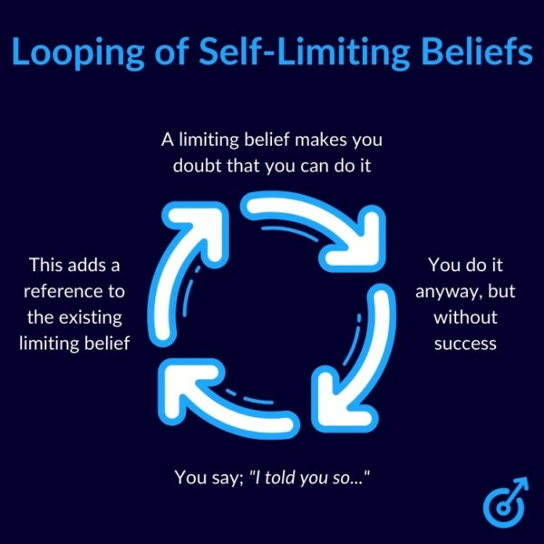

Achieve Your Goals with Mind Movies
Transformational Mind Movies coaching is a powerful visualization method that helps align your subconscious and conscious mind toward achieving your dreams. This technique involves creating personalized video affirmations, reinforcing positive beliefs and life-changing goals. Kathryn Newton specializes in guiding clients through creating and effectively using these personalized Mind Movies. Each session provides clear strategies to overcome internal obstacles, enabling clients to visualize their success vividly. The process not only empowers but also motivates individuals to take inspired action. Experience clarity, momentum, and significant life shifts through the tailored guidance of Naturally Elevated.
Experience the Power of Positive Visualization
Transformational Mind Movies can profoundly impact your emotional, mental, and spiritual well-being. This proven method helps clients manifest career success, healthy relationships, financial abundance, and personal happiness. Through customized visualization practices, Kathryn Newton allows clients to unlock their potential and sustain long-term motivation. The Mind Movies approach is adaptable, accessible, and engaging, perfect for anyone ready to invest in their personal growth. Online sessions provide personalized and comfortable interactions to fit your lifestyle and preferences. Take the first step to elevate your life through this innovative, transformative method today.
If you’ve ever struggled with visualization or keeping your manifestation practice consistent, Mind Movies can be a game-changer. Think of it as a personalized, digital vision board—but way more powerful. Instead of flipping through a magazine and pasting pictures onto a board (which is great but static), Mind Movies bring your dreams to life with moving images, affirmations, and music that deeply impact your subconscious.